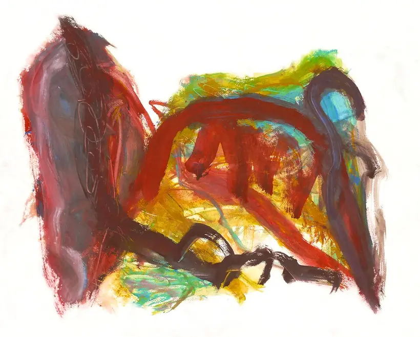
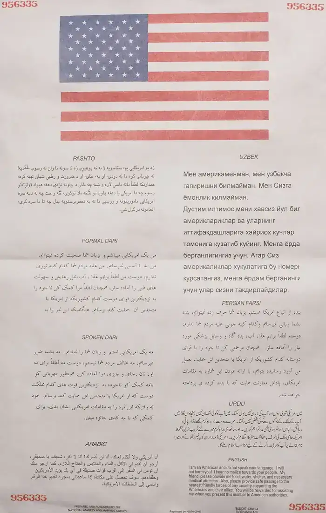

The programme
From the late 1940s, the CIA's Congress for Cultural Freedom — a covertly funded organisation — supported journals, concerts and exhibitions across Europe, including abstract expressionist art. The purpose was cultural: to present the United States as a place of artistic freedom, in contrast to Soviet socialist realism.
Maps, diagrams and images


The record
The funding was secret until 1967, when it was exposed in the press; the Congress for Cultural Freedom had received money from the CIA through private foundations. The scale of the art programme is documented, though the claim that the CIA 'invented' abstract expressionism is not — the artists were working before and independently of the funding.
The distinction matters: covert patronage of an existing movement is documented; the creation of a movement by an intelligence agency is not.
Documented: the covert funding, its channels and its purpose.
Documented: the 1967 exposure.
Not established: that the CIA created the movement.
The distinction: patronage versus invention.
The label: documented.
Why it is in the archive
Because it is the case where the real story is stranger than the myth and the myth is more flattering to the conspiracy.
Open resources on this topic
- PapersOpen-access articles: DOAJ · PubMed Central · Internet Archive Scholar
- BooksPublic-domain and borrowable copies: Open Library · Project Gutenberg · Google Books · Internet Archive
Cite this page
Momin, S. (2026). The CIA and Modern Art. The Larger World Archive. https://drsamonline.github.io/LARGE_GLOBE/cia-modern-art.htmlMomin, Sohil. “The CIA and Modern Art.” The Larger World Archive, 2026, https://drsamonline.github.io/LARGE_GLOBE/cia-modern-art.html.Momin, Sohil. “The CIA and Modern Art.” The Larger World Archive, 2026. https://drsamonline.github.io/LARGE_GLOBE/cia-modern-art.html.@misc{the2026cia,
author = {Momin, Sohil},
title = {The CIA and Modern Art},
year = {2026},
howpublished = {The Larger World Archive},
url = {https://drsamonline.github.io/LARGE_GLOBE/cia-modern-art.html},
note = {Last reviewed 20 November 2026}
}Last reviewed 20 November 2026 · Corrections policy · this page is not peer reviewed
Sources for this page
- Wikipedia, “Congress for Cultural Freedom” — the organisationen.wikipedia.org
- Wikipedia, “Abstract expressionism” — the movementen.wikipedia.org
- Wikipedia, “Cultural Cold War” — the wider contexten.wikipedia.org
- Wikipedia, “Central Intelligence Agency” — the agencyen.wikipedia.org